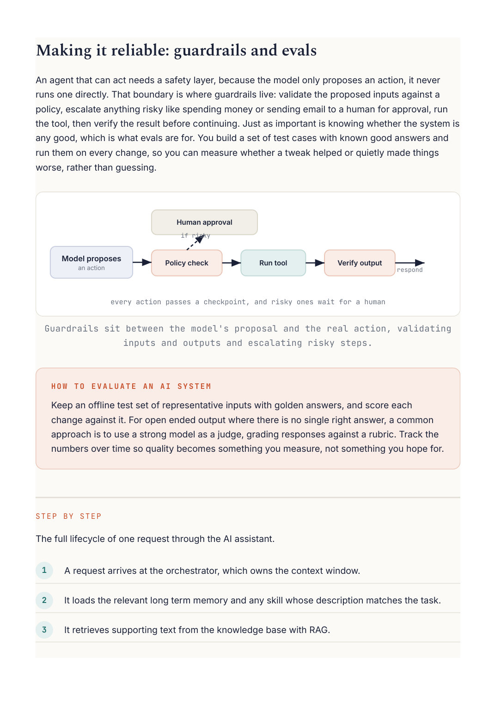

AI Engineering
Chapter 42
Design: an AI agent
P U T T I N G I T T O G E T H E R
Let us wire the whole part together into one system: an assistant that answers questions over your company's documents, remembers context across a conversation, and can take real actions. This is where the model, RAG, memory, the agent loop, MCP, and skills all meet.
Requirements
Answer questions from private documents with citations, hold a conversation that remembers earlier context, take actions like creating a ticket or sending an email through tools, and stay safe while doing it. Reads dominate, and correctness plus traceability matter more than raw speed.
Knowledge (RAG) vector DB Memory facts, past chats Agent orchestrator User the loop + the model Tools via MCP actions answer + citations Skills procedures One orchestrator runs the loop and pulls knowledge, memory, tools, and skills into the model's context as needed.
How the pieces fit
An orchestrator runs the agent loop and owns the context window. When a request comes in, it pulls in the relevant memory and any matching skill, then enters the loop: retrieve supporting text with RAG, let the model think, possibly call a tool through MCP, observe the result, and repeat until it can answer. It returns the answer with citations back to the source chunks, and updates memory with anything worth keeping for next time.
The decisions that matter
Keep the context lean: retrieve what you need rather than stuffing everything in, because every token competes for the same budget. Put guardrails on any tool that changes the world, with validation and, where needed, human approval. Add evals, a set of test questions with known good answers, so you can measure whether a change actually helped. And cache embeddings and frequent retrievals to keep it fast and cheap.
PROS CONS Answers are grounded in real data and An agent is more complex and harder to come with citations debug than a single call The agent can actually act, not just talk, Every retrieval, tool, and skill competes through tools for the context budget Memory and skills keep it consistent Actions need real guardrails, which take across a long session effort to get right Each piece can be improved or Without evals you cannot tell if a change swapped on its own helped or hurt
E V E R Y T H I N G C O M P E T E S F O R T H E C O N T E X T W I N D O W
Notice the theme running through this whole part. The system prompt, the conversation, retrieved documents, recalled memories, tool results, and loaded skills all share one fixed context budget. Designing an AI system is mostly the art of deciding, at each moment, what deserves a place in that window.
Going Deeper

An agent that can act needs a safety layer, because the model only proposes an action, it never runs one directly. That boundary is where guardrails live: validate the proposed inputs against a policy, escalate anything risky like spending money or sending email to a human for approval, run the tool, then verify the result before continuing. Just as important is knowing whether the system is any good, which is what evals are for. You build a set of test cases with known good answers and run them on every change, so you can measure whether a tweak helped or quietly made things every action passes a checkpoint, and risky ones wait for a human Guardrails sit between the model's proposal and the real action, validating Keep an offline test set of representative inputs with golden answers, and score each change against it. For open ended output where there is no single right answer, a common approach is to use a strong model as a judge, grading responses against a rubric. Track the numbers over time so quality becomes something you measure, not something you hope for. The full lifecycle of one request through the AI assistant. A request arrives at the orchestrator, which owns the context window. It loads the relevant long term memory and any skill whose description matches the task. It retrieves supporting text from the knowledge base with RAG.
The model reasons, and may call a tool through MCP, whose result is observed. The loop repeats until the model can answer, which it returns with citations to the sources. Anything worth remembering is written back to memory for next time.